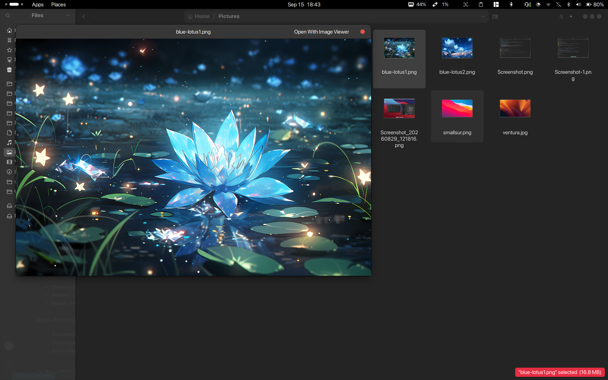
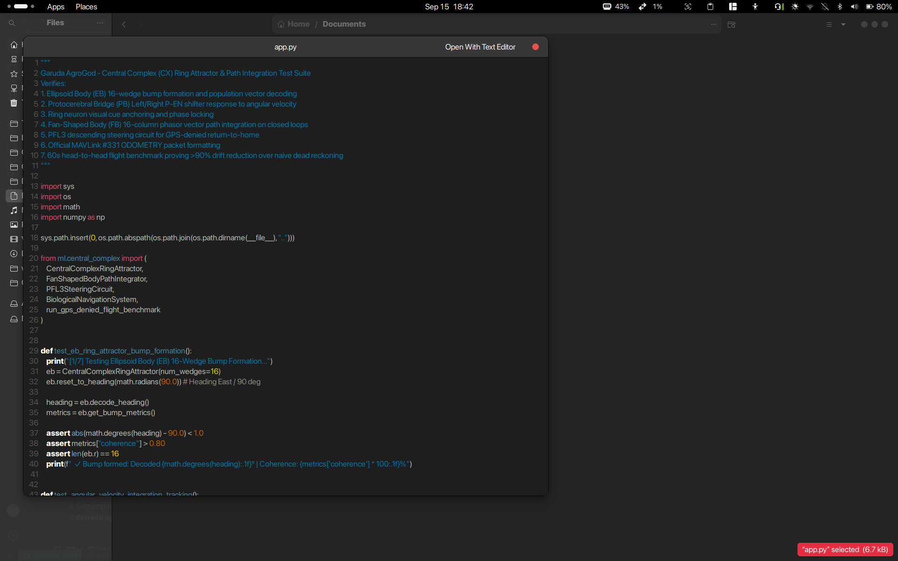
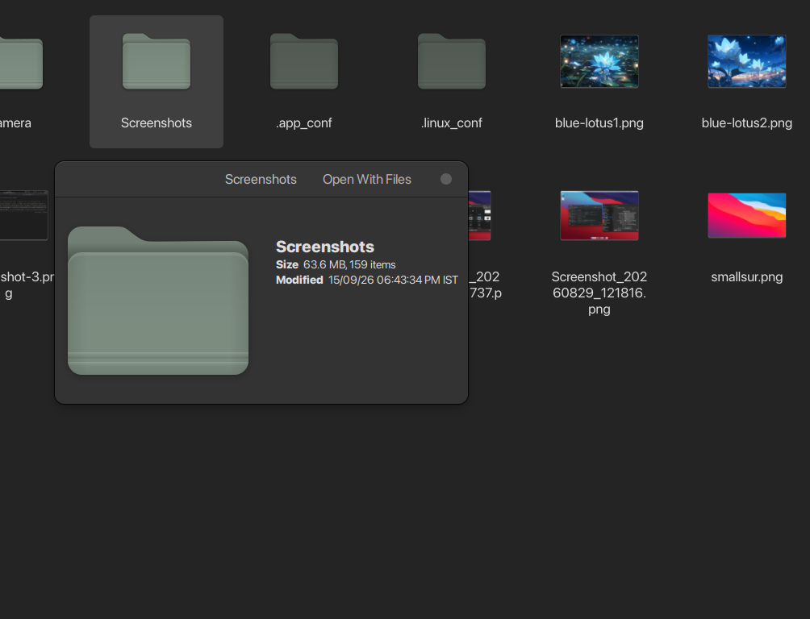

Beyond themes and wallpapers: A practical breakdown of the hidden superpowers, instant spacebar file previews, screen OCR, clipboard history, and seamless phone integration that keep me in deep flow state.
A clean-looking desktop with dark wallpaper and a floating dock is great, but aesthetics alone don't write code, compile firmware, or keep you focused during a 12-hour sprint.
When software engineers or designers switch from macOS to Linux, they usually love the raw power and terminal freedom. What catches them off guard is losing small, invisible everyday habits: tapping the spacebar to preview files, grabbing text from videos with OCR, infinite clipboard history, and seamless phone-to-PC clipboard sync.
I set out to build a Linux environment that eliminates every single one of those friction points. Here are the exact tools, configurations, and shortcuts that make my machine feel faster and more capable than any commercial OS.
On default systems, checking what is inside a file requires launching heavy applications. You double-click a multi-megabyte PDF, wait 3 seconds for Document Viewer to launch, realize it's the wrong revision, close it, and repeat. Or you launch a full IDE just to inspect a 10-line JSON file.
On macOS, users rely on Quick Look. On my Linux workstation, this exact capability is powered by GNOME Sushi.

Tapping Space on a massive 16.8 MB illustration (blue-lotus1.png) displays a crisp, color-accurate preview with zoom toggles in under 80ms—no photo editor required.

Auditing functions, checking docstrings, or verifying imports in Python (app.py), Rust, JSON, or Bash scripts directly from Nautilus with accurate syntax coloring and line numbering.

Instead of right-clicking and opening slow "Properties" dialogs, hitting Space on a folder reveals total item count (159 items), size on disk (63.6 MB), and last modified timestamp at a glance.
.py, .js, .json, .yml, .sh, .cpp, .md display syntax-highlighted code with line numbers without touching an editor.Pro-Tip: Hit Space once, then use the ↑ and ↓ arrow keys to rapidly fly through dozens of photos or documents. The preview updates instantly in place!
sudo apt update
sudo apt install -y gnome-sushi
nautilus -q # restart file managerWe constantly run into "uncopyable" text on our screens:
Retyping long compiler flags or GUIDs by hand is error-prone. With SnapText, I have an on-screen OCR engine hooked directly into GNOME Shell.
I trigger the hotkey, drag a small box across any region on my screen, and within 200ms, the text is extracted via Tesseract OCR and placed directly into my clipboard.
Standard OS clipboards store only one item at a time. If you copy a complex terminal command, switch windows, and copy an email address, your command is lost forever.
With Clipboard Indicator sitting in my top panel:
Checking your phone for 2FA SMS codes or transferring camera photos kills momentum. GSConnect brings full Apple Continuity / AirDrop features to Linux using the KDE Connect protocol:
| Feature | How It Works In Practice |
|---|---|
| Unified Clipboard | Copy a tracking number or URL on your phone → Press Ctrl+V directly on your PC. |
| Desktop Notifications | SMS, WhatsApp, and calls pop up in GNOME; you can reply directly from the desktop banner. |
| AirDrop File Drops | Right-click any file in Nautilus → Send to Phone with zero cloud intermediaries. |
| Smart Media Pause | Incoming phone calls automatically pause music playing on your PC. |
Instead of wrestling with window borders or memorizing complex i3/Hyprland tiling configurations, I use Tiling Shell:
When coding in fullscreen or writing documentation, you want complete immersion. But you still need to check the time or battery level.
With peek-top-bar-on-fullscreen, the top bar remains completely hidden. When you want to see your status, simply bump your mouse cursor against the top edge of the screen. The panel smoothly glides down, lets you check your indicators, and glides away automatically.
On cold boot or wake-from-sleep, my laptop launches straight into an animated live lockscreen with video wallpaper and clock:
🔓 Unlocked — Press any key to open.The real secret to making Linux feel snappier than macOS is kernel and build optimization:
lz4 compression. The system never experiences mouse-freezes or out-of-memory stalls.# Enable smooth Variable Refresh Rate (120/165Hz)
gsettings set org.gnome.mutter experimental-features "['variable-refresh-rate']"
# Install blazingly fast modern linker & compiler cache
sudo apt install -y mold ccache| Workflow | Shortcut / Action | Engine |
|---|---|---|
| Instant File Preview | Space on any file in Nautilus | gnome-sushi |
| Grab Screen Text | Custom OCR Hotkey / Tray Icon | snaptext (Tesseract) |
| Clipboard History | Super + V | clipboard-indicator |
| Phone Sync & Clipboard | Automatic Wi-Fi sync | gsconnect |
| Grid Snapping | Drag to edge / Super + Arrows | tilingshell |
| Peek Clock / Battery | Bump cursor to top screen edge | peek-top-bar-on-fullscreen |
| Face Unlock | Look at screen → Tap Space | live-lockscreen + Howdy |